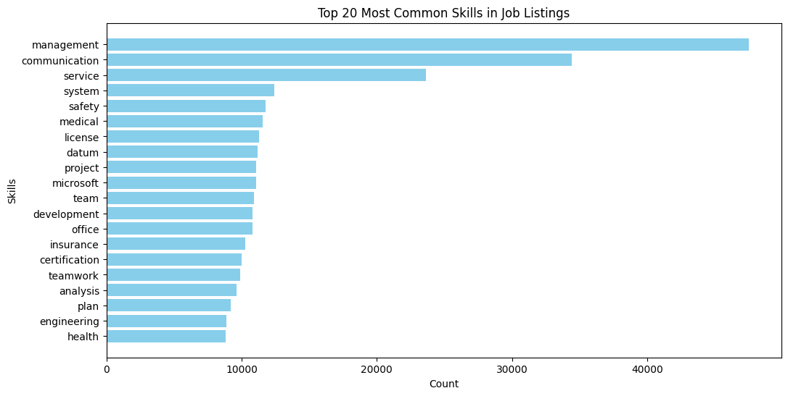
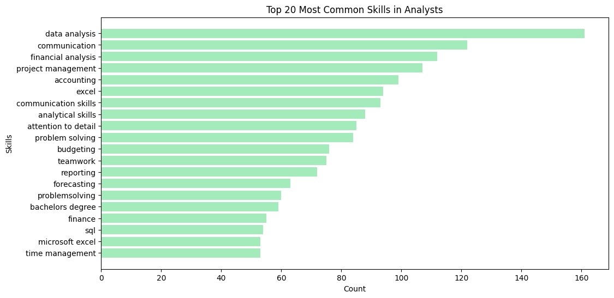
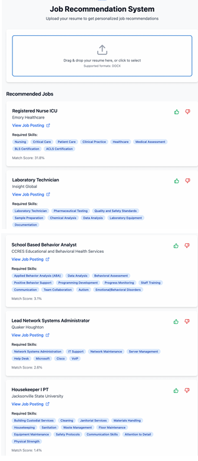

Job Recommendation System
Overview
This project builds a skill based job recommendation system using a 1.3 million record LinkedIn jobs and skills dataset from 2024. The pipeline cleans and normalizes skills, represents text with TF-IDF, computes similarity to a users input profile, and returns a ranked list of relevant roles. The system shortens search time for candidates, helps recruiters target the right audience, and keeps job platforms engaging through accurate and transparent matches. Deliverables include a working prototype and a report that explains data preparation, model design, evaluation, and sample recommendations.
Problem Statement
Recruiters must screen large volumes of resumes for each opening, which leads to slow hiring cycles, inconsistent evaluations, and missed qualified candidates. Manual review struggles with unstructured resume formats, varied terminology, and subtle skill equivalence, and it increases the risk of unconscious bias and poor candidate experience.
The goal is to build a resume recommendation system that ingests a job description and a pool of resumes, then ranks and surfaces the most relevant candidates with clear reasons. The system should handle noisy text and diverse formats, map skills and experience to job requirements, and provide fast, explainable results that support fair and data driven decisions. Success will be measured by higher precision at the top of the ranked list, improved recall of qualified candidates, reduced time to screen, and stable fairness metrics across candidate groups.
Data
This project uses the LinkedIn Jobs and Skills dataset named “1.3M Linkedin Jobs & Skills (2024)” from Kaggle. The dataset contains about 1.3 million job listings from the 2024 with 2 fields. Each post has a link and a list of skills. For faster testing, we worked with a smaller sample of 50,000 rows and kept the full data for final checks. The file is loaded and cleaned in Google Colab.
Snapshot
Rows in full set 1,296,381
2 columns: job_link and job_skills
job_link: the URL for the job post
job_skills: a comma separated list of required or preferred skills
Working subset 50,000 rows
Data preprocessing
Create clean, consistent skills text that is ready for search, matching, and vectorization.
Steps
- Load and inspect read the CSV, check row count, columns, and missing values
- Remove noise drop rows with missing job_skills and remove duplicates so each job appears once
- Normalize text convert to lowercase, trim extra spaces, remove punctuation and special characters while keeping commas that separate skills
- Tokenize skills split job_skills by commas so each skill becomes a clean token
- Stopwords remove common words that add no meaning and a custom list such as skill, experience, degree
- Lemmatize use spaCy to reduce words to their base form for example analyzing becomes analyze
- Standardize names build a skills mapping dictionary so variants map to one canonical name for example ms excel and microsoft excel become Excel
- Reassemble join cleaned tokens into a standardized skills string for each job
- Vectorize create Bag of Words and TF IDF features for ranking and retrieval, with embeddings as a future option
Quality Check
- Confirm job_link remains unique
- Recount missing values after cleaning
- Review top skill frequencies before and after to verify standardization
- Time the pipeline on the 50,000 row sample to ensure efficient runs
Exploratory Data Analysis
1. Wordcloud
- Soft skills dominate. Terms like communication, customer service, time management, and problem solving appear most often, signaling that employers value people who can interact well, manage time, and resolve issues across roles and industries.
- Education signals. High school diploma appears frequently as a baseline; bachelor’s degree is present but less common, suggesting only some roles explicitly require higher education.
- Digital literacy. Tools such as Microsoft Office and Office suites show up strongly, indicating basic tech proficiency is a standard expectation.
Takeaway: The market emphasizes transferable soft skills, basic digital tools, and a broad entry-level educational bar, which together shape how candidates should present skills and how platforms should weight features in recommendations.
2. Top 20 Most Common Skills
- Interpersonal skills lead. Management, communication, and service appear most often, reinforcing the importance of collaboration and people skills across roles.
- Industry-specific skills. Terms like medical, health, safety, and license point to healthcare and compliance needs where certifications are common.
- Technical depth. System, engineering, and development highlight demand for technical expertise in software, infrastructure, and industrial roles.
- Business execution. Project, plan, teamwork, and analysis reflect strategic planning, delivery, and cross-functional collaboration.
Takeaway: Employers want a mix of people skills, recognized credentials, technical capability, and analytical execution—with strong signals from healthcare, engineering, business management, insurance, and technology.

3. Top 20 Most Common Skills in Analytics Roles
- Core soft skills. Analysis, management, and communication are prominent, showing analysts must interpret data and work effectively with teams.
- Financial fluency. Financial, cost, budget, and accounting point to forecasting, cost analysis, budgeting, and reading financial statements to support decisions.
- Tool basics. Microsoft and Excel signal baseline proficiency with spreadsheets and reporting workflows.
- Operational execution. Report, process, and system suggest compiling large datasets, standardizing processes, and communicating findings clearly.
Takeaway: Analytics roles blend data interpretation, business finance, and clear communication, with everyday tooling in Excel and structured reporting.

Tools
Modeling and data: Python (Pandas, scikit learn, matplotlib, seaborn, re, nltk, spacy, wordcloud, matplotlib.pyplo, streamlit,t, flask, pyngrok)
Visualization and reporting: Excel
User interface: Bolt
Key Methods and Approach
1. Training pipeline
- Represent job skills and user profile with TF-IDF vectors
- Rank jobs by cosine similarity to the user profile
- Strengths fast, transparent, easy to explain and tune
- Embed skills with Word2Vec to capture semantic similarity
- Cluster jobs and retrieve nearest clusters for the user profile
- Strengths handles synonyms and near-matches better than pure TF-IDF
2. Hyperparameter tuning
- Use grid search, random search, or Bayesian optimization for key settings
- TF-IDF n-grams, min_df, max_df
- Cosine retrieval top-K cutoff
- Word2Vec vector size, window, min_count, epochs
- TF-IDF n-grams, min_df, max_df
- Track results with a simple experiment log for reproducibility
3. Validation
- k-fold cross-validation for robust estimates
- Holdout set for a final unbiased check
- Optional A/B testing for UI-level comparisons once a prototype is live
4. Model Evaluation Metrics
- Precision, Recall, F1-score for relevance at the top of the list
- AUC-ROC for ranking quality (where labels exist)
- RMSE only when evaluating numeric relevance scores against ground truth
5. Error analysis
- Review mis-ranked or missed jobs, and high-error segments
- Check failure patterns by industry, seniority, and skill sparsity
- Use insights to refine cleaning, skill standardization, and feature choices
6. User interface
- Bolt UI with a LinkedIn-style layout for familiarity
- Inputs user skill list and optional role or industry
- Outputs ranked jobs with top matching skills highlighted and a link to the posting
7. Feedback loop
- Collect quick thumbs-up or thumbs-down to improve future rankings
- Log queries and outcomes to support retraining and threshold tuning
Model Training
Goal
Train and fine tune NLP models that deliver accurate, explainable job recommendations.
1. Text vectorization (TF–IDF)
What it is:
Vectorization turns text into numbers so models can learn. We considered One-Hot, Bag of Words, TF–IDF, and word embeddings (Word2Vec, GloVe, FastText). We use TF–IDF on the job_skills column.
Why TF–IDF:
- Down-weights common skills like “communication” or “teamwork,” reducing noisy matches
- Stronger signal than BoW, which treats every token equally
- More efficient than embeddings for our scope no large pre-trained models or extra compute
Steps:
- Build a TF–IDF model to convert job skills into numeric vectors
- Get the feature names (unique skills)
- Transform skills into a sparse TF–IDF matrix
- Convert to a Pandas DataFrame for ranking and retrieval
2. Building the recommendation model:
Inputs:
- Jobs LinkedIn postings from Kaggle with titles, descriptions, and skills
- Resumes uploaded DOCX files with experience and skills
Pipelines:
- Job pipeline
- Extract title, description, and skills
- Chunk long descriptions if needed
- Vectorize with TF–IDF (and optional embeddings for future scale)
- Store job vectors in a vector database for fast lookup
- Extract title, description, and skills
- Resume pipeline
- Parse DOCX text and clean it
- Normalize skills to the same schema as jobs
- Vectorize the resume to the same space as jobs
- Store resume vectors in the same index
- Parse DOCX text and clean it
Retrieval and ranking:
- Similarity metric use cosine similarity between the resume vector and job vectors
- Ranking sort by similarity and return the top five matches with key skills highlighted
Feedback loop:
- Collect thumbs-up or thumbs-down on recommendations
- Re-rank based on feedback and log interactions to improve future results
3. Deployment and testing
Test design:
We gathered a diverse set of resumes across multiple industries to check how well the system handles different backgrounds and wording. Sectors included Technical and Software, Healthcare and Medical, Education and Childcare, Creative and Design, and Business and Management.
Prototype and UI:
The first UI was built with Bolt and deployed as a clickable prototype for rapid iteration:
Open the prototype
User test procedure:
- Upload resume (DOCX) into the mock UI
- Extract skills and normalize them to the same schema as job postings
- Retrieve matches using cosine similarity over the vector index
- Review Top-5 recommendations with matched skills highlighted
- Record feedback on relevance and clarity for later re-ranking
What we evaluated:
- Skill extraction accuracy do extracted skills reflect the resume content
- Recommendation quality are the top results relevant and varied
- User experience is the flow clear, fast, and easy to use on first try
Example walkthrough Healthcare resume
We uploaded a Healthcare and Medical resume and the system returned five recommended roles ranked by similarity. The first result was the closest match, with subsequent items offering adjacent options for exploration.

Results
Offline accuracy: 85% on a held-out validation set (cross-validated).
Initial findings
Early tests showed inaccurate recommendations. Two drivers stood out
- the model was in an early stage
- the Bolt prototype used a very small set of about fifteen job postings
Model improvements
- Added Word2Vec based matching to capture semantic similarity between skills
- Example cleaning and sanitation are treated as related, improving match quality
- Example cleaning and sanitation are treated as related, improving match quality
- Kept TF–IDF for speed and transparency, and blended scores where helpful
Data freshness plan
- Implement periodic scraping of job listings with BeautifulSoup or Scrapy
- Consider API based feeds where available to reduce scraping overhead
- Define a refresh schedule and deprecate stale jobs after a set age
Interim augmentation (prototype phase)
- Used manual uploads to add recent postings and diversify test data
- Logged outcomes to identify gaps in skills coverage and labeling
What to track next
- Click-through and thumbs-up / thumbs-down rates in the UI
- Coverage of top skills by industry and the age of postings in the index
Business Implication
Our system shortens hiring cycles and lowers costs by automating first-pass screening, so recruiters spend time on fewer, higher-quality resumes. Using TF-IDF and Word2Vec to match skills and context improves shortlist precision and interview pass-through rates, while ongoing feedback tuning keeps results aligned with recruiter intent.
Because job listings are refreshed through automated scraping, recommendations stay current with market demand and scale cleanly as volume grows. The pipeline’s consistent text processing and explainable matching reduce subjective bias, supporting fairer, more defensible decisions. Candidates also benefit from clearer “why this match” signals and more relevant roles, which boosts engagement and reduces drop-off.
Finally, product analytics—queries, matches, clicks, and feedback—surface skill gaps, channel performance, and conversion bottlenecks for workforce planning. Together, these capabilities differentiate the platform for both employers and job seekers. Core KPIs to monitor include time-to-screen, time-to-offer, precision@K, candidate response rate, cost per hire, and fairness metrics across groups.
Links
Dataset Source:
1.3M Jobs and Skills Dataset on Kaggle